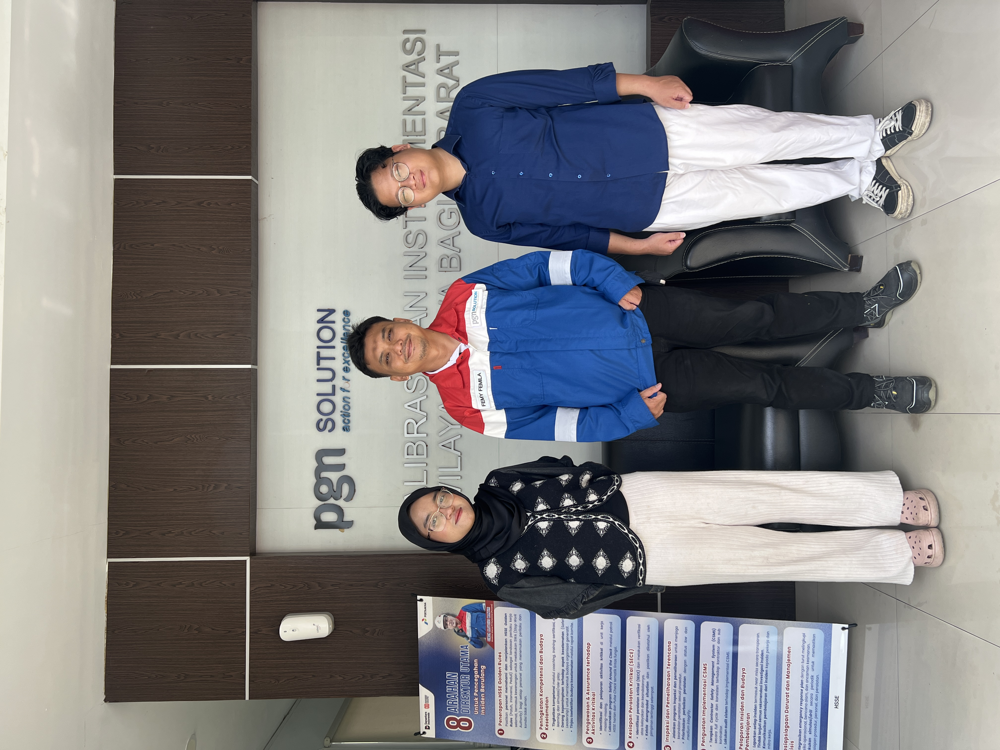
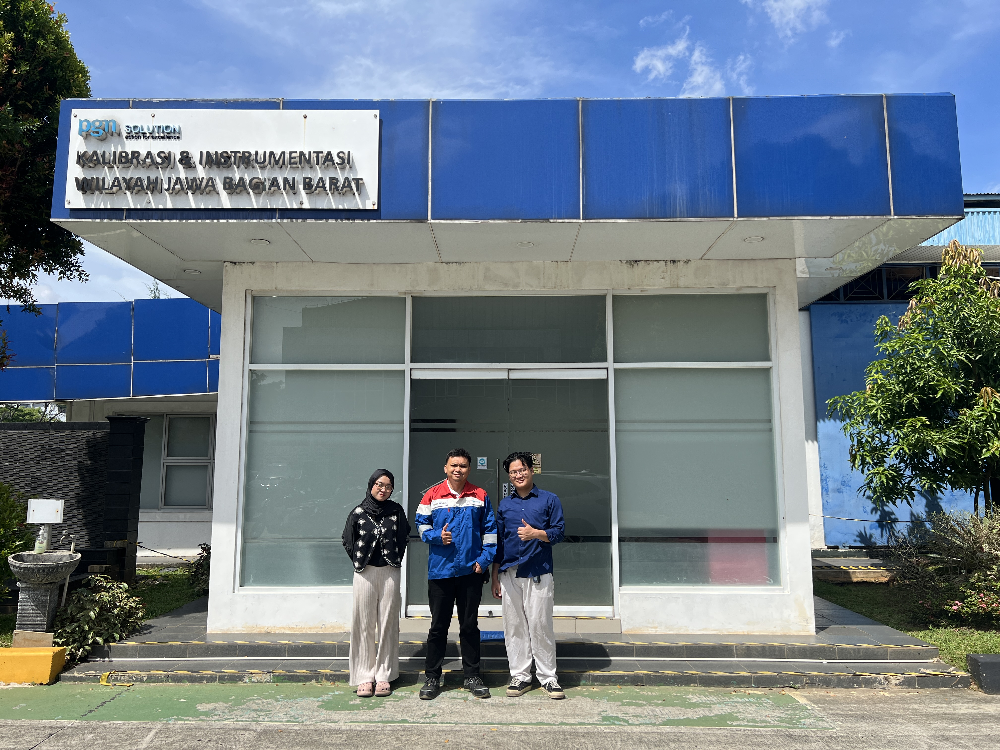
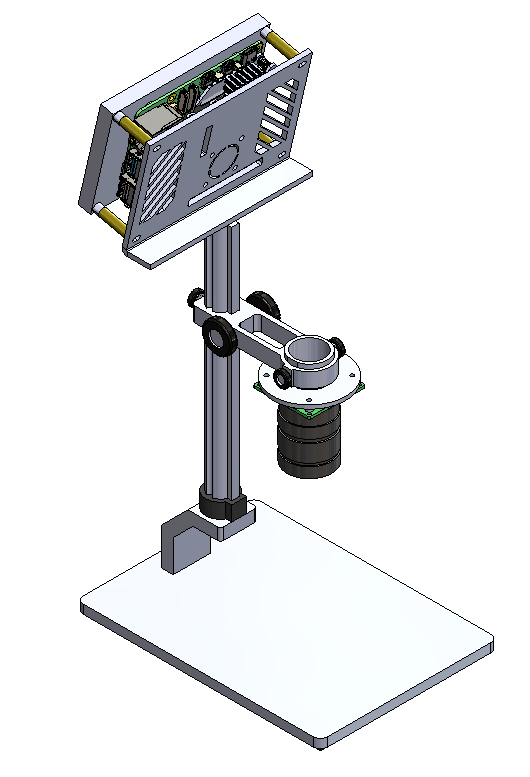
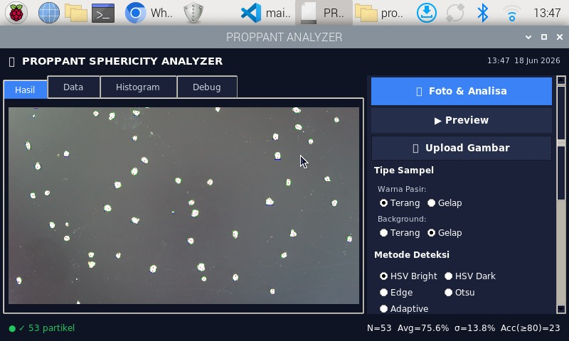

Presisi pengukuran untuk keandalan operasi kilang.
Lulusan D-IV Teknik Instrumentasi Kilang PEM Akamigas dengan pengalaman kalibrasi instrumen berstandar ISO/IEC 17025, pemrograman PLC & DCS, serta pengembangan sistem computer vision berbasis Raspberry Pi. Terbuka untuk peran I&E Engineer di sektor migas, siap relokasi nasional.

Tentang Saya
Latar belakang, fokus teknis, dan apa yang saya bawa ke meja kerja.
Saya Dillon Diandri, engineer instrumentasi & elektrikal lulusan Diploma IV PEM Akamigas Cepu (Politeknik Energi dan Mineral di bawah Kementerian ESDM). Selama studi dan tiga periode magang di lingkungan kilang dan jasa energi, saya membangun fondasi kuat pada sistem pengukuran, kontrol proses, kalibrasi instrumen lapangan, serta penerapan prosedur keselamatan migas.
Di luar pekerjaan inti instrumentasi, saya aktif mengembangkan sistem embedded dan computer vision — dari PLC dan DCS sampai integrasi sensor IoT berbasis ESP32 dan pengolahan citra OpenCV di Raspberry Pi. Saya terbiasa bekerja teliti, mendokumentasikan hasil secara rapi, dan menyelesaikan masalah teknis sampai tuntas.
Riwayat Kerja
Pengalaman langsung di fasilitas kilang dan jasa energi nasional.
Anak perusahaan PT Perusahaan Gas Negara (PGN) Tbk. Terlibat langsung dalam kegiatan kalibrasi instrumen pengukuran berstandar ISO/IEC 17025 di laboratorium dan fasilitas operasional.
- Kalibrasi pressure gauge menggunakan Additel 920 sesuai prosedur standar
- Kalibrasi instrumen temperatur dengan oil bath WIKA Microbath CTB9100 / CTB9500
- Kalibrasi Electronic Volume Corrector (EVC) untuk metering gas
- Penyusunan laporan dan sertifikat kalibrasi sesuai ketertelusuran metrologi
- Penerapan prosedur K3 di lingkungan industri gas bumi


Magang di lingkungan kilang pengolahan minyak, mengenal sistem instrumentasi dan kontrol proses pada unit Residue Catalytic Cracking (RCC) serta operasi kilang skala besar.
- Mempelajari sistem kontrol proses dan instrumentasi lapangan unit kilang
- Membaca dan menginterpretasi P&ID serta loop instrumentasi
- Memahami integrasi DCS pada operasi unit proses


Mempresentasikan paper berjudul "Kalibrasi Temperature Gauge Menggunakan Oil Bath di Industri Kilang" pada Seminar Nasional Teknik Energi dan Mineral (SNTEEM).
Latar Belakang Akademik
Pendidikan vokasi terapan yang berfokus pada sektor energi nasional.
Politeknik Energi dan Mineral Akamigas di bawah Kementerian ESDM, fokus mencetak SDM unggul sektor energi. Kurikulum mencakup sistem pengukuran & kontrol, kalibrasi instrumen lapangan, PLC & DCS, SCADA, elektronika industri, pneumatik–hidrolik, dan keselamatan kerja migas.
Proyek Unggulan
Sistem pengukuran sphericity pasir proppant berbasis computer vision.
Rancang Bangun Sistem Pengolahan Citra Sphericity Pasir Proppant
Sistem pengukuran tingkat kebulatan (sphericity) butiran pasir proppant secara otomatis menggunakan pengolahan citra digital. Mengikuti standar API RP 19C dengan formula sphericity (Dmin/Dmax)×100%, dikategorikan Excellent (≥90), Good (80–89), Fair (70–79), dan Poor (<70). Dibangun modular dengan Python & OpenCV pada Raspberry Pi 5.


Keahlian Teknis
Kemampuan yang dikembangkan melalui pendidikan vokasi dan pengalaman lapangan.
Kalibrasi & Metrologi
Kontrol & Otomasi
Embedded & Computer Vision
Keselamatan & Dokumentasi
Mari Terhubung
Terbuka untuk peluang sebagai Instrumentation & Electrical Engineer di sektor migas. Siap relokasi nasional.